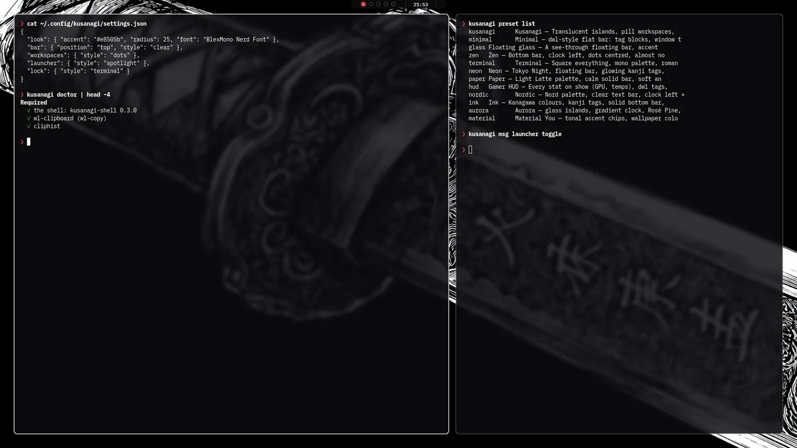
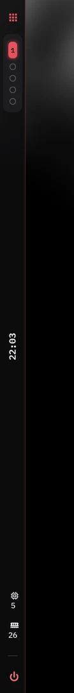

KUSANAGI草薙
A desktop shell for Wayland. Bar, launcher, control panel, notifications, wallpapers and lock screen in one native program, configured from its own Settings.
❯ kusanagi kusanagi-shell 0.3.0 ✓ bar top · clear · 7 modules ✓ wallpaper parallax on ✓ panel, launcher, notifications ❯
screens
Every part of the desktop, in one style.

kusanagi msg bar template …
Twenty bar layouts to start from. Every piece of each one is yours to change.

Settings has a live editor: drag modules between sections, group them into islands, give each one its own
colours, caps, gradients, formats, icons and click actions. Layouts live in settings.json as plain data.
settings → appearance
Pick a design for each part of the desktop.
ls features/
What you get.
- barAny edge, several bars, islands or solid. Every module has formats, states, tooltips and click actions. A live editor in Settings.
- panelDrops out of the clock: volume, Wi-Fi, Bluetooth, brightness, media, weather and quick toggles.
- launcherApps, plus
=to calculate,>to run,:for emoji,/for files and?for the web. - clipboardHistory with image previews, search and one-key paste.
- wallpaperPicker, transitions, parallax and slideshow. Colours can follow the picture.
- lockSix lock screen designs, idle locking, and an optional greetd login screen to match.
- settingsNineteen pages and a setup wizard. No config file editing needed.
- game modeKicks in on fullscreen games, holds notifications and drops effects.
kusanagi preset apply …
Whole looks in one click.
compositors
Runs on the compositor you already use.
- MangoWM
- Hyprland
- niri
- sway
- labwc
- KDE Plasma
- dwl
The installer writes autostart and keybinds for each one and works around the keys you already use.
install
Download, extract, run.
# from the latest release ❯ sha256sum --ignore-missing -c SHA256SUMS ❯ mkdir -p ~/.local/opt ❯ tar -xJf kusanagi-*-linux-x86_64.tar.xz -C ~/.local/opt ❯ cd ~/.local/opt/kusanagi-*-linux-x86_64 ❯ ./install ❯ kusanagi
The download runs on x86_64 Linux with glibc 2.39 or newer: Arch, Fedora 40+, Debian 13, Ubuntu 24.04, Void and others from the last couple of years. No root needed.
The first kusanagi sets up autostart and keybinds for your compositor, then the
shell opens its setup. Updating is the same steps with the new download.
Prefer source? Build it with the installer. Full guide: docs/install.md.